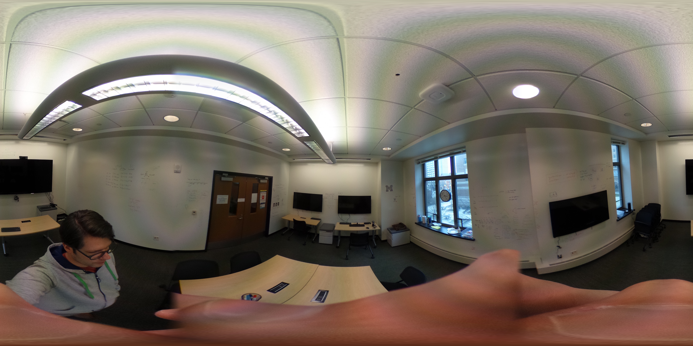

<!DOCTYPE html>
<html lang="en">

<head>
	<meta charset="UTF-8">
	<title>3D Lab</title>
	<script src="https://aframe.io/releases/0.5.0/aframe.min.js"></script>

	<script src="vendor/aframe-click-drag-component.min.js"></script>
	<script src="https://rawgithub.com/ngokevin/kframe/master/components/reverse-look-controls/dist/aframe-reverse-look-controls-component.min.js"></script>

	<script>
		registerAframeClickDragComponent(window.AFRAME);
	</script>

	<script src="/.common/https.js"></script>
	<script src="/.common/require.js"></script>

	<style>
		#debug {
			position: absolute;
			left: 0px;
			bottom: 0px;
			height: 10%;
			overflow: hidden;
			z-index: 9999;
			font-family: monospace;
			font-size: 200%;
			color: white;
		}
	</style>
</head>

<body>
	<video id="video" autoplay style="position: absolute; width: 100%"></video>
	<div id="debug"></div>
	<a-scene style="opacity: 0.5">
		<a-assets>
			<a-asset-item id="mi2lab-obj" src="mi2lab.obj"></a-asset-item>

			<a-asset-item id="michi-obj" src="michi.obj"></a-asset-item>

			<!---->

			<!--<video id="video" autoplay loop crossorigin></video>-->
		</a-assets>

		<a-entity position="0 0 -15" obj-model="obj: #michi-obj;" scale="3.0 3.0 3.0" material="side: double; color: #silver; transparent: true; opacity: 0.75"></a-entity>

		<a-box id="redbox" click-drag position="0 0 -5" dynamic-body="mass: 0.1" color="red"></a-box>
		<a-box id="bluebox" click-drag position="5 0 -5" dynamic-body="mass: 0.1" color="blue"></a-box>

		<a-entity id="logo" click-drag position="10 5 -10" obj-model="obj: #mi2lab-logo-obj;" scale="0.5 0.5 0.5"></a-entity>

		<!--<a-videosphere src="#video" rotation="0 180 0"></a-videosphere>-->

		<!--<a-sky src="#video" segments-width="1000"></a-sky>-->

		<a-camera id="camera" look-controls-enabled="true"></a-camera>
	</a-scene>
	<script>
		var video = document.querySelector("#video");
		var scene = document.querySelector("a-scene");
		var camera = scene.querySelector("a-camera");
		var dragging = false;

		var timeout;
		(function resize() {
			clearTimeout(timeout);
			timeout = setTimeout(function () {
				if (window.innerWidth > window.innerHeight) {
					video.style.width = "100%";
					video.style.height = "auto";
				}
				if (video.clientHeight < window.innerHeight) {
					video.style.width = "auto";
					video.style.height = "100%";
				}
			}, 500);
			window.onresize = resize;
		})();

		var vars = {};

		function debug(name, value) {
			vars[name] = value;
			document.querySelector("#debug").innerHTML = JSON.stringify(vars);
		}

		require(["webrtc", "camera", "xd", "kinect"]).then(function () {
			XD.log = console.log;

			XD.on("camerachanged", function (e) {
				if (dragging) return;
				camera.setAttribute("look-controls-enabled", "false");
				if (e.rotation) {
					camera.setAttribute("rotation", e.rotation);
				}
				else {
					camera.setAttribute("position", e.position);
				}
				camera.setAttribute("look-controls-enabled", "true");
			});

			XD.on("componentchanged", function (e) {
				var target = scene.querySelector(e.target);
				target.setAttribute("position", e.position);
			});

			XD.on("kinect", function (e) {
				var pos = camera.getAttribute("position");
				if (pos) {
					var dist = Kinect.getRightHand(e.bodyFrame).cameraZ;
					pos.z = dist || pos.z;
					camera.setAttribute("position", pos);
				}
			});

			function setVideo(stream) {
				if (!video.srcObject) video.srcObject = stream;
			}

			var webrtc = new WebRTC({
				room: "protoar",
				onstream: setVideo
			});

			setTimeout(function () {
				new Camera({
					camera: 0,
					onstream: function (stream) {
						setVideo(stream);
						webrtc.addStream(stream);
					}
				});
			}, 2000);

			document.addEventListener("dragstart", function () {
				dragging = true;
				camera.setAttribute("look-controls-enabled", "false");
			});

			document.addEventListener("dragend", function () {
				camera.setAttribute("look-controls-enabled", "true");
				dragging = false;
			});

			camera.addEventListener("componentchanged", function (e) {
				if (e.detail.name == "rotation") {
					XD.send({
						event: "camerachanged",
						rotation: e.detail.newData
					});
					debug("camera-rotation", camera.getAttribute("rotation"));
				}
				else if (e.detail.name == "position") {
					XD.send({
						event: "camerachanged",
						position: e.detail.newData
					});
					debug("camera-position", camera.getAttribute("position"));
				}
			});

        [].forEach.call(scene.querySelectorAll("[click-drag]"), function (el) {
				el.addEventListener("componentchanged", function (e) {
					if (e.detail.name == "position") {
						XD.send({
							event: "componentchanged",
							target: "#" + e.target.id,
							position: el.getAttribute("position")
						});
					}
				});
			});
		});
	</script>
</body>

</html>